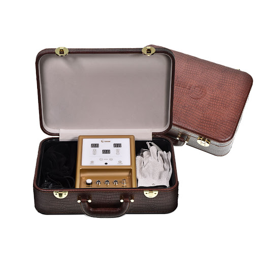

Ультразвуковая насадка Fohow изготовлена из титанового
сплава, который обладает высокой проводимостью и устойчивостью
к окислительным процессам. Насадка биоэнергомассажера Fohow
позволяет выполнить глубокий массаж лица и тела, улучшить
кровообращение в тканях и внутренних органах, активизировать
биохимические процессы в организме.
Частота волны ультразвуковой насадки Fohow достигает 1 МГц,
что эквивалентно 1 млн массажных вибраций воздействующих на
клетку ежесекундно. Воспроизводимые волны улучшают функции
клеток и способствуют размягчению затвердевших соединительных
тканей. Ультразвук быстро повышает температуру клеток в глубоких
слоях кожи - благодаря чему происходит улучшение кровообращения,
нормализация обмена веществ и повышение клеточной активности.
